O JJ Integration dispõe de uma barra de Menu onde o usuário tem acesso as funcionalidades de Agendamento, Visualizar, Ferramentas, Windows, Ajuda e a barra de tarefas. A seguir, detalharemos as funcionalidades encontradas na barra de menu do JJ Integration.
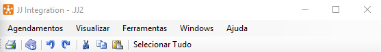
Agendamentos
Em Agendamentos é possivel Criar, Alterar, Excluir, Visualizar os eventos e sair da aplicação "Exit".
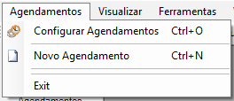
Configurar Agendamentos
Configurar agendamentos de tarefas e eventos.
Em Configurar Agendamentos pode-se incluir, alterar, excluir, executar, parar, visualizar log, filtrar e atualizar agendamento de tarefas. Esta função também pode ser acessada através do menu lateral do JJ Integration.
Para entender mais sobre a funcionalidade siga o passo a passo na seção Agendamentos deste manual.
Novo Agendamento
Ao selecionar o sistema irá exibir uma tela para agendamento de tarefas onde deverá preencher informações sobre a tarefa, execução, ações, log e notificação. Após preencher os campos necessários selecione o botão "Ok" para finalizar.
Na aba "Tarefa" preencha o nome da tarefa desejada, uma breve descrição e selecione se é uma tarefa ativa ou não.
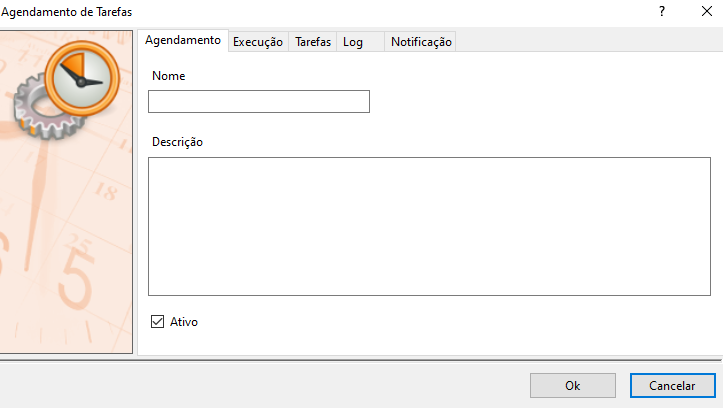
- Na aba "Execução" selecione a data de vigência, periodicidade, hora e intervalo de atualização.
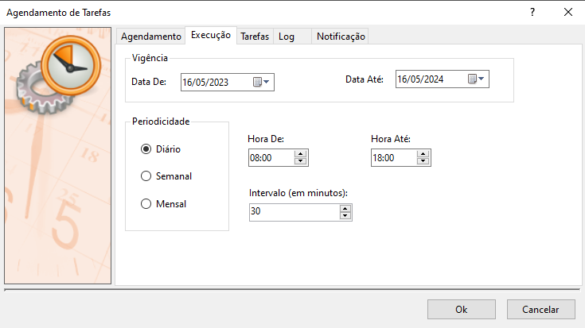
- Na aba "Tarefas" selecione a ação que deseja que a tarefa realize e as tabelas desejadas.
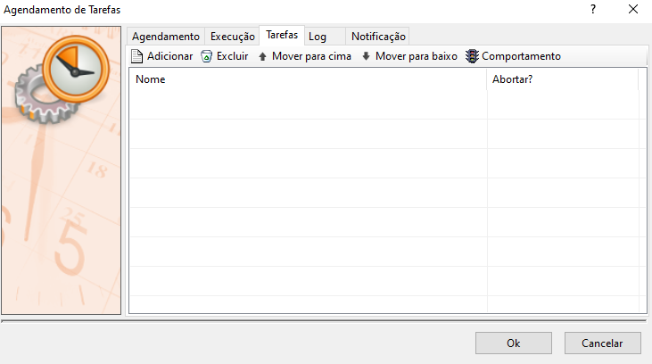
- Na aba "Log" configure o log de agendamento, podendo utilizar o log genérico da aplicação ou definir uma configuração diferente.

- Na aba "Notificação" configure quando será feita a notificação, o assunto e o e-mail de destino.
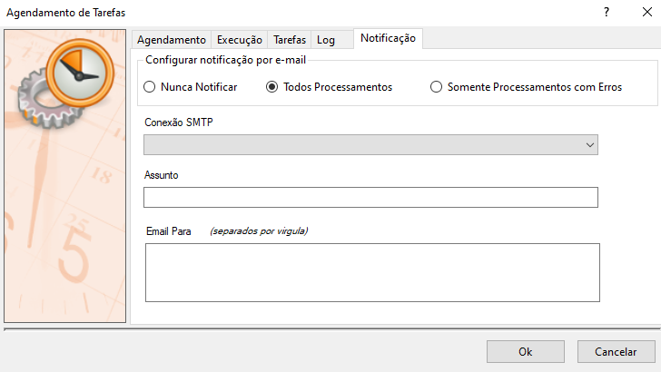
Visualizar
Em Visualizar pode-se escolher deixar ou não a barra de tarefas e o rodapé da aplicação disponíveis em tela. Para ativar ou desativar basta selecionar opção desejada.
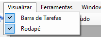
Ferramentas
Em Ferramentas pode-se realizar exportações e importações de arquivos e múltiplos arquivos, transferir arquivos configurar notificações, scripts externos e conexões.
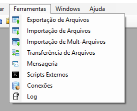
 Exportação de Arquivos
Exportação de Arquivos
Em Exportação de Arquivos pode-se incluir, alterar, excluir exportações e atualizar exportações cadastradas no sistema. Esta função também pode ser acessada através do menu lateral do JJ Integration.
Para entender mais sobre a funcionalidade siga o passo a passo na seção Exportação de Arquivos deste manual.
Importação de Arquivos
Em Importação de Arquivos pode-se incluir, alterar, excluir importações e atualizar importações cadastradas no sistema. Esta função também pode ser acessada através do menu lateral do JJ Integration.
Para entender mais sobre a funcionalidade siga o passo a passo na seção Importação de Arquivos deste manual.
Importação de Mult-Arquivos
Em Importação de Mult-Arquivos pode-se incluir, alterar, excluir importações e atualizar importações cadastradas no sistema. Esta função também pode ser acessada através do menu lateral do JJ Integration.
Para entender mais sobre a funcionalidade siga o passo a passo na seção Importação de Mult-Arquivos deste manual.
 Transferência de Arquivos
Transferência de Arquivos
Em Transferência de Arquivos pode-se incluir, alterar, excluir arquivos e atualizar arquivos cadastrados no sistema. Esta função também pode ser acessada através do menu lateral do JJ Integration.
Para entender mais sobre a funcionalidade siga o passo a passo na seção Transferência de Arquivos deste manual.
Mensageria (notificações)
Em Mensageria pode-se incluir, alterar, excluir notificações e atualizar notificações cadastradas no sistema. Esta função também pode ser acessada através do menu lateral do JJ Integration.
Para entender mais sobre a funcionalidade siga o passo a passo na seção Mensageria deste manual.
Scripts Externos
Em Scripts Externos pode-se incluir, alterar, excluir scripts e atualizar scripts cadastrados no sistema. Esta função também pode ser acessada através do menu lateral do JJ Integration.
Para entender mais sobre a funcionalidade siga o passo a passo na seção Scripts Externos deste manual.
Log
Ao selecionar esta opção o sistema irá exibir uma tela de configurações de Log onde é possível configurar o console, Event Viewer do Windows, Arquivo Texto e Banco de dados.
Para entender mais sobre a funcionalidade siga o passo a passo na seção Log deste manual.
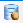 Conexões
Em Configurar Conexões pode-se incluir, alterar, excluir conexões e atualizar conexões cadastradas no sistema. Esta função também pode ser acessada através do menu lateral do JJ Integration.
Para entender mais sobre a funcionalidade siga o passo a passo na seção Conexões deste manual.
Windows
Em Windows pode-se configurar como as janelas dentro do JJ, Para ativar uma configuração basta selecionar opção desejada.
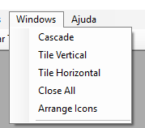
Ajuda
Em ajuda pode-se visualizar as opções "Ajuda OnLine" e "Sobre..." onde o usuário poderá realizar o registro e visualizar informações sobre o JJ Integration.
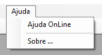
Ao selecionar o botão "Ajuda Online", o sistema irá abrir uma guia em seu navegador com a nossa documentação com todos os detalhes sobre o sistema.
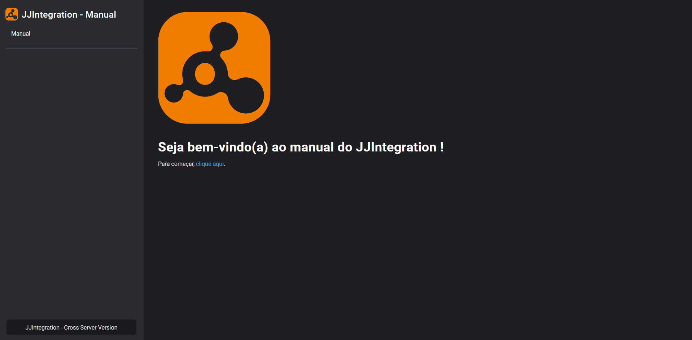
Ao selecionar o botão "Sobre..." o sistema irá exibir uma janela com detalhes sobre a aplicação, selecione o botão "Registrar" para validar sua versão ou selecione o botão "Ok" para fechar a tela.
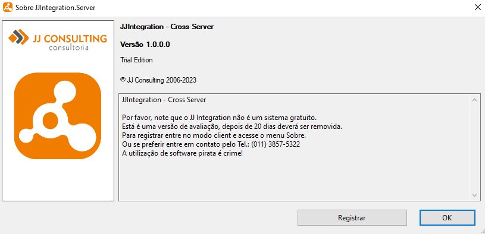
Barra de Tarefas
Em barras de tarefas pode-se utilizar atalhos para as funções de imprimir, help, desfazer, refazer, recortar, copiar, colar e selecionar tudo.
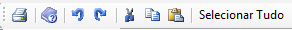
Selecione o botão Imprimir para imprimir a tela atual do JJ Integration.
Selecione o botão Help para visualizar o guia do usuário - JJ Integration.
Selecione o botão Desfazer para desfazer uma ação.
Selecione o botão Refazer para refazer uma ação.
Selecione o botão Recortar para recortar um objeto desejado.
Selecione o botão Copiar para copiar um objeto desejado.
Selecione o botão Colar para colar um objeto copiado.
Selecione o botão Selecionar Tudo para selecionar todos os elementos da página atual.